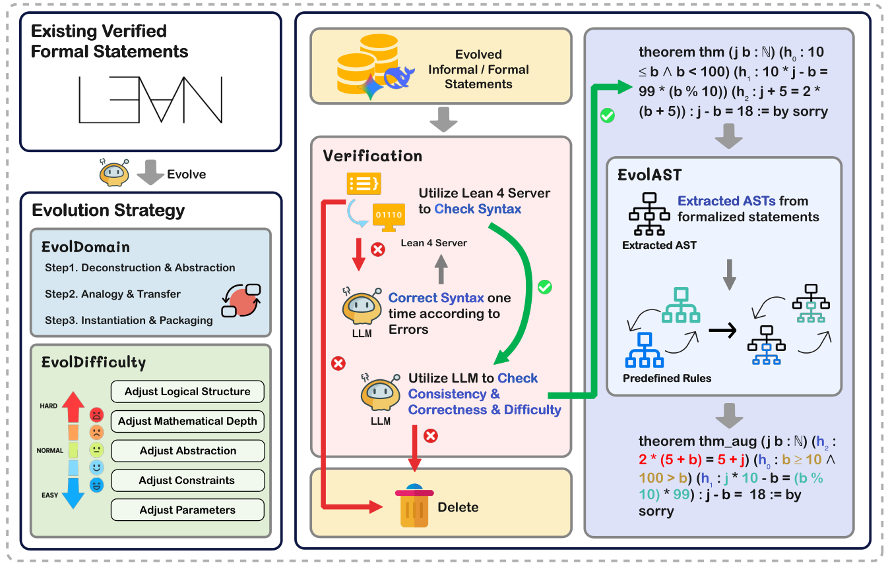
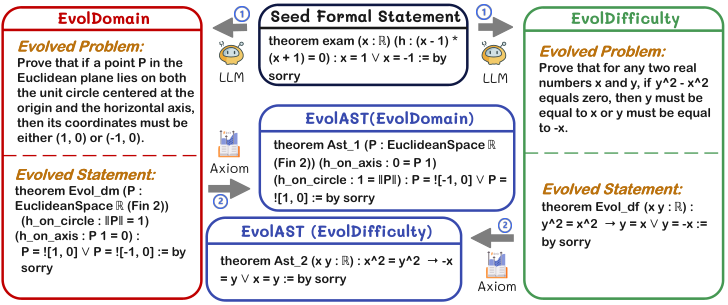

Trains a 7B Lean 4 prover on augmented data, with statements generated via Lean 4 AST-level rewrites and checked by the Lean 4 compiler.
Abstract
Large Language Models (LLMs) for formal theorem proving have shown significant promise, yet they often lack generalizability and are fragile to even minor transformations of problem statements. To address this limitation, we introduce a novel data augmentation pipeline designed to enhance model robustness from two perspectives: symmetry and difficulty. From the symmetry perspective, we propose two complementary methods: EvolAST, an Abstract Syntax Tree (AST) based approach that targets syntactic symmetry to generate semantically equivalent problem variants, and EvolDomain, which leverages LLMs to address semantic symmetry by translating theorems across mathematical domains. From the difficulty perspective, we propose EvolDifficulty, which uses carefully designed evolutionary instructions to guide LLMs in generating new theorems with a wider range of difficulty. We then use the evolved data to train EvolProver, a 7B-parameter non-reasoning theorem prover. EvolProver establishes a new state-of-the-art (SOTA) on FormalMATH-Lite with a 53.8% pass@32 rate, surpassing all models of comparable size, including reasoning-based models. It also sets new SOTA records for non-reasoning models on MiniF2F-Test (69.8% pass@32), Ineq-Comp-Seed (52.2% pass@32), and Ineq-Comp-Transformed (34.0% pass@32). Ablation studies further confirm our data augmentation pipeline's effectiveness across multiple benchmarks.
Problem
LLM-based formal theorem provers generalize poorly and are fragile to minor transformations of problem statements, partly because high-quality formal training data is scarce.
Approach
A data augmentation pipeline evolves Lean 4 statements from the DeepSeek-Prover-V1 and STP-Lean datasets. EvolDomain uses an LLM to translate theorems across mathematical domains, and EvolDifficulty uses an LLM to vary their difficulty. Candidates are checked by the Lean 4 compiler and an LLM semantic check. EvolAST then produces semantically equivalent syntactic variants through Lean 4 AST rewrites, and a 7B non-reasoning prover is trained on the result with SFT and RL using a binary Lean-verification reward.

Figure 2: The workflow of our data augmentation pipeline comprises three phases: EvolDomain and EvolDifficulty, Verification, and EvolAST.

Figure 1: An example of problems evolved by EvolDomain, EvolDifficulty, and EvolAST. A seed formal statement is evolved in parallel by EvolDomain and EvolDifficulty, yielding two new statements. Each of these is then further evolved by EvolAST to generate syntactic variants.
Results
EvolProver reaches 53.8% pass@32 on FormalMATH-Lite, the best among comparable-size models. It also sets non-reasoning records on MiniF2F-Test (69.8%), Ineq-Comp-Seed (52.2%) and Ineq-Comp-Transformed (34.0%). Ablations show gains from each augmentation stage.